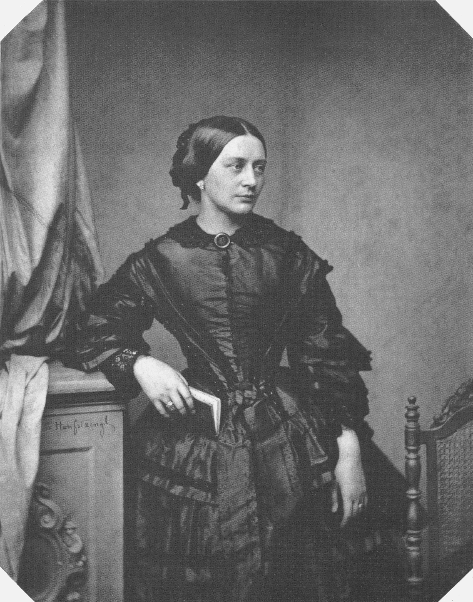

La gran concertista Europea del siglo XIX

Clara Wieck (Leipzig, 13 de septiembre de 1819-Fráncfort del Meno, 20 de mayo de 1896), conocida como Clara Schumann, fue una pianista, compositora y profesora de piano alemana. Fue una de las grandes concertistas europeas del siglo xix y su carrera fue clave en la difusión de las composiciones de su marido, Robert Schumann. Considerada como una de las pianistas más distinguidas de la era romántica, ejerció su influencia en una carrera de conciertos de 61 años, y cambió el formato y el repertorio del recital de piano de exhibiciones desde el virtuosismo a programas de obras serias.
Denominada en Europa la Reina del piano, por más de seis décadas, Clara Wieck, mejor conocida por su apellido de casada, Clara Schumann, desarrolló una extraordinaria carrera como pianista y compositora, a pesar de los obstáculos y sinsabores que padeció debido al carácter de su padre.
Como intérprete, el público apreciaba su técnica, su tono y sentimiento poético. Fue de las primeras pianistas en tocar obras de memoria. “Nunca ha habido una pianista que haya retenido con tal intensidad la atención del público durante tanto tiempo”, escribió un periódico de su época.
Como compositora, Clara Schumann realizó obras para piano solo, canciones para voz y piano, música de cámara y de orquesta, así como música coral a capella. A los 72 años dio su último concierto, Variaciones sobre un tema de Haydn.
Un día antes de cumplir 21 años se casaron Clara y Robert Schumann. Tuvieron ocho hijos, algunos murieron por enfermedades o causas desconocidas. Un encuentro crucial en la vida de los Schumann fue la llegada de Johannes Brahms, tres años antes del fallecimiento de Schumann. Su cordial relación culminaba en alegres veladas donde los tres tocaban sus composiciones. La amistad entre Clara y Brahms perduró toda la vida.